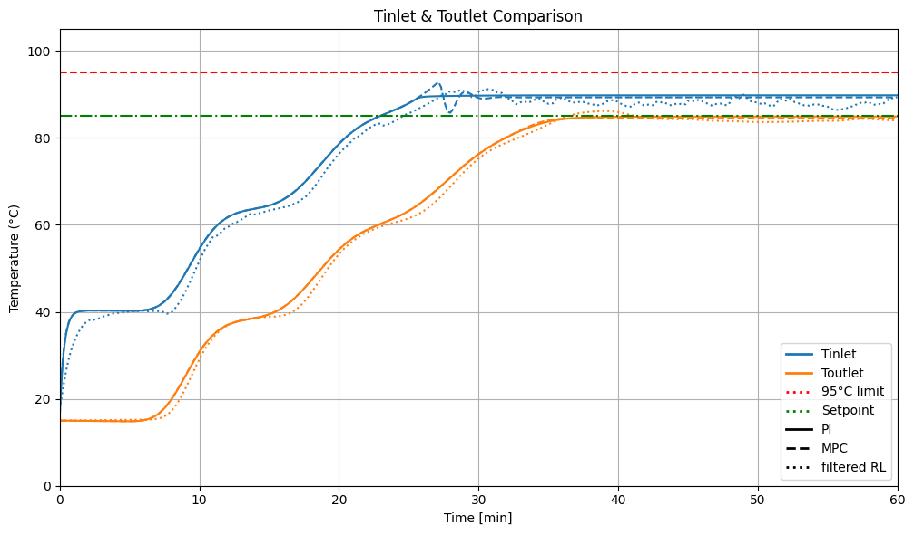
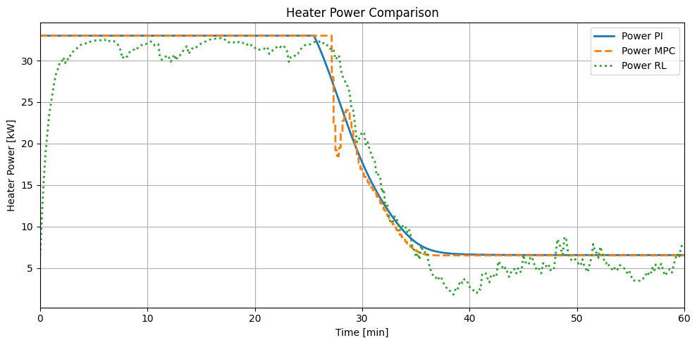

from compare_everything import plot_comparison_step
plot_comparison_step()


from runRL import *
run_RL(alpha=0.2 )
Using cpu device
Wrapping the env with a `Monitor` wrapper
Wrapping the env in a DummyVecEnv.
---------------------------------------------------------------------------
ModuleNotFoundError Traceback (most recent call last)
Cell In[2], line 3
1 from runRL import *
----> 3 run_RL(alpha=0.2 )
File ~/PycharmProjects/NehemisControl/mybook/runRL.py:16, in run_RL(alpha)
15 def run_RL(alpha=1.0):
---> 16 model.load("sac_pipeheater_model")
18 obs, _ = env.reset()
19 Tin_hist, Tout_hist, P_hist, R_list = [], [], [], []
File /opt/miniconda3/lib/python3.12/site-packages/stable_baselines3/common/base_class.py:681, in BaseAlgorithm.load(cls, path, env, device, custom_objects, print_system_info, force_reset, **kwargs)
678 print("== CURRENT SYSTEM INFO ==")
679 get_system_info()
--> 681 data, params, pytorch_variables = load_from_zip_file(
682 path,
683 device=device,
684 custom_objects=custom_objects,
685 print_system_info=print_system_info,
686 )
688 assert data is not None, "No data found in the saved file"
689 assert params is not None, "No params found in the saved file"
File /opt/miniconda3/lib/python3.12/site-packages/stable_baselines3/common/save_util.py:434, in load_from_zip_file(load_path, load_data, custom_objects, device, verbose, print_system_info)
430 if "data" in namelist and load_data:
431 # Load class parameters that are stored
432 # with either JSON or pickle (not PyTorch variables).
433 json_data = archive.read("data").decode()
--> 434 data = json_to_data(json_data, custom_objects=custom_objects)
436 # Check for all .pth files and load them using th.load.
437 # "pytorch_variables.pth" stores PyTorch variables, and any other .pth
438 # files store state_dicts of variables with custom names (e.g. policy, policy.optimizer)
439 pth_files = [file_name for file_name in namelist if os.path.splitext(file_name)[1] == ".pth"]
File /opt/miniconda3/lib/python3.12/site-packages/stable_baselines3/common/save_util.py:165, in json_to_data(json_string, custom_objects)
163 try:
164 base64_object = base64.b64decode(serialization.encode())
--> 165 deserialized_object = cloudpickle.loads(base64_object)
166 except (RuntimeError, TypeError, AttributeError) as e:
167 warnings.warn(
168 f"Could not deserialize object {data_key}. "
169 "Consider using `custom_objects` argument to replace "
170 "this object.\n"
171 f"Exception: {e}"
172 )
ModuleNotFoundError: No module named 'numpy._core.numeric'